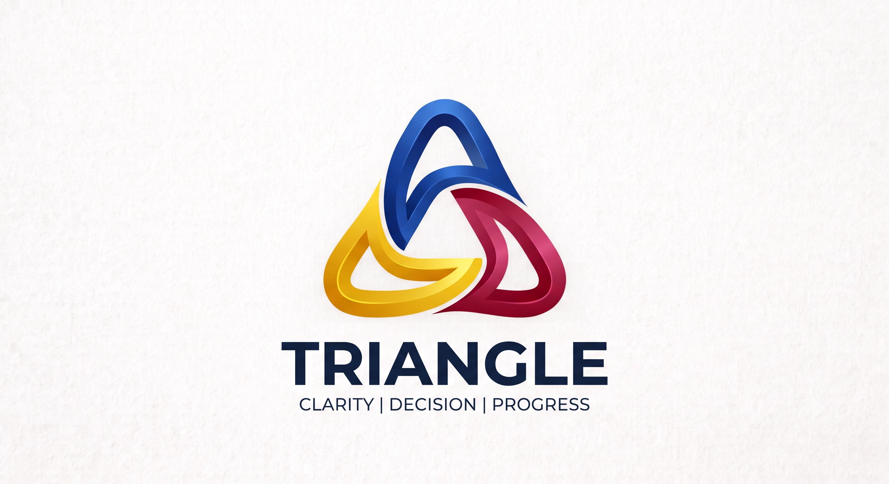

Triangles hold their shape under pressure. Human systems should learn from the strongest structures we already know. Triangle is an immutable ledger of human judgment for the AI era.
Join the 30-Day PilotThe decision that needed making was too big for one person. But one person decided it anyway.
Someone in the meeting disagreed. They said nothing — or if they spoke, their objection vanished into the minutes nobody reads. Six months later, the decision went wrong. The dissent had been there. It wasn't recorded. The institution learned nothing.
This is not a people problem. It is a structural failure. Good people make bad decisions when the structure concentrates too much pressure on isolated points.
Dynamic Authority. Recorded Dissent. AI Advisory.
Three people. Small enough for absolute accountability. Large enough for necessary disagreement. No one leads alone.
Unanimity is preferred but not required. When 2/3 proceed, the dissent is permanently recorded as structural intelligence, not erased as noise.
Authority flows to competence, not title. The individual closest to the operational facts leads the specific decision.
Machines recommend. Humans decide. AI must never become legitimate authority. Accountability stays permanently human.
We are selecting organizations to test the Triangle framework for 30 days. Replace broken meetings with structured trilateral decisions. Preserve institutional memory. Prove human accountability before integrating AI.